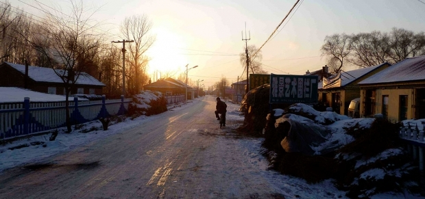

光
刘子山在床上躺着，奢望着一点光亮。
他亲手垒起的砖屋早已没有了几十年前的光荣，半个世纪的历史对一个人来讲过于沉重，以至于岁月的痕迹从他佝偻的后背悄悄爬上了身边的墙壁，蚕食了墙上的老报纸，剥开了曾经光鲜的劣质油漆，让人能轻易窥到下面的褐色砖头和灰色砂浆——那是刘子山壮年时期拼命遮拦的耻辱。肆意地揭了刘子山的短儿后，贪婪的岁月居然还嫌不够，于是慢吞吞地攀上立柱，由内到外地腐蚀着几根支撑着屋顶的木头，以至于几十年后的今天，曾经粗壮的木头早已被折腾得腐朽不堪，只能勉强挺直腰杆守住他们的岗位，拼尽最后一口气防止屋顶轰然倒塌。凡是刘子山的荣誉奖状没能遮盖的地方，岁月的淫威都留下了触目惊心的伤痕：匆忙修补的孔洞、满目疮痍的墙壁、摇摇欲坠的灯泡。似乎一旦刘子山咽气，他投入了大半生心血的房子就要立刻轰然倒塌，随他而去。
此时正是凌晨，村子里早已万籁俱寂，就连刘子山家也是一样。屋内除了身着丧服的人们的小声抽噎外，只剩下刘子山破手风琴般的呼吸声。
嗬，嘶，嗬，嘶……
刘子山费力地稍稍挪动脖子，想要最后环视一下自己呕心沥血保护的家人们，然而他只能看到黑暗。身着黑衣的家人，昏暗的油灯，如油墨般的黑夜，还有被癌细胞压迫的视神经——黑暗如绞索般逐渐套上他的脖子，让他更加无法呼吸。
早就说不让他们穿这晦气衣服，他想。现在老子连屋头都看不得。老子就要死咯，连点亮光也不给吗？
他深深地叹了口气。这可吓坏了围在床边的人，也打破了持续多时的宁静。家人们的哭号一声高过一声，硬是惊醒了窗外熟睡的乌鸦，使其嘎嘎惊叫着飞遁。刘子山惊讶地看着哭号的家人们，想听懂他们到底究竟在哭什么。
“你走的也太早了！“儿媳妇一边扑到他身上，一边抹着眼泪，哑着嗓子吼道。刘子山暗自觉得有些好笑。他活了九十岁有余，且不说脑子是否清醒，就算痴呆了，能活这么久也是几乎奇迹，居然还算早？他挣扎着想张开嘴安慰几句，但下颚早已宣布独立，对大脑发出的有气无力的命令不屑一顾。
他儿子抿了抿嘴，止住自己的哭声，将手放在妻子背上拍了又拍，低声地附在她耳边说着什么。刘子山看着儿子，心里顿感欣慰——曾经让自己放不下心的刺头早已长成了顶天立地的男子汉，现在已经坚强到可以安慰别人了。就是这样，刘子山想，你们冷静下来我才好放心上路。看着儿子，刘子山仿佛看到了曾经的自己。几十年前，自己的父亲在劣绅抢走了家里最后的种子时，也是这样在自己和几个弟弟妹妹的簇拥下咽了气。而当时的自己则和现在的儿子一样，拼命忍着悲伤，轻轻地拍着旁边三妹的肩膀。毕竟作为大哥，再有万般的痛苦和难堪，他也不断告诫自己：须得打碎了牙往肚子里咽，就算把肠子划拉得破破烂烂，把胃划得要从屁眼里拉出来，也得撑起自己破败的家。凭着这骨子劲，他才扛起了腐朽的屋顶，不至于让父亲传下来的房子倒塌。
现在，看着眼前的儿子，刘子山感到了与父亲相比有过之而无不及的欣慰。他用尽全身的力气，将手抬起了几厘米。这可吓坏了家人们，他儿子赶忙扑上前握紧父亲的手。
“您尽管吩咐，有什么要交代的我一定办……”话还没说完时，儿子的声音便已经哽咽了，“一定办，您放心……”
全家人于是也都泣不成声，哭号声似乎要将本就不结实的房梁震得开裂。
刘子山拼命呼吸着。破手风琴的声音再次充满了房间，虽然其势单力薄，声势微弱，却也不动声色地将哭声挤出了房间，让房子瞬间近乎诡异地归于死寂。刘子山想穷尽最后一点力气和儿子告别，对儿子说做事不要太鲁莽，不要急于求成，更不要继承了遗产就飞扬跋扈，为害一方。可惜的是，他的身体早就罢了工，声带也因肿瘤的压迫而无法震动。于是他的嘴唇无力地一张一合翕动着，尽管他儿子急忙将耳朵凑到他嘴边，也终归未能知晓他想说什么。刘子山于是将力气放在手上，在昏花的眼睛对上儿子焦急的目光的同时，用指尖在儿子手背上颤颤巍巍地滑动了几下，随即便让疲惫感再次接管身体，无论儿子怎么呼喊也不再动弹，只是出气多、进气少了。
天空中，圆月早已躲在乌云后面不见踪影，而东方象征黎明的鱼肚白还没出头，只有一点紫色在东方探头探脑——那是光子被氧分子散射开后留下的遗痕。这紫光看了看外面的世界，仿佛很满意似的，便缩回陕西的群山后面报喜。很快地，白的、红的、粉的，全都听到了喜讯，一股脑儿全从山峦后面冒出头来。都来吧！——刘子山仿佛听到它们喊着。都来吧！他也不禁在心里高喊，呼吸也变得更加急促了。逐渐，刘子山的眼睛失去了光泽，这便成了他这一生看到的最后景象。
远处的山峦自然无从知晓渺小砖屋内刘子山的心情，仍然不厌其烦地将黎明的迹象抛掷到东方的天空中，用无数种颜色取代黑暗。过了不知多久，天空已经被色彩填满，一个圆滚滚的火球才慢吞吞地把它厚重的身体从连绵不绝的山脉后面抬出来。顿时，无数光子爆发而出，争先恐后地照耀着每一寸早已厌倦黑暗的大地。
刘子山感受到他的脸上的一丝温暖。阳光透过床头碎裂的玻璃照在他的脸上，他奢望的光亮正如恋人般亲吻着他的面庞，致使他因疾病而苍白的脸颊都红润了几分。
刘子山似乎也露出了一缕微笑。都来吧，他竭尽全力地想着，逐渐停止了呼吸。
-2025.3.20, Suzhou, Jiangsu, China, Tony Su
Art Credit: Michael Meyer
Click Me For Document Download as .docx File